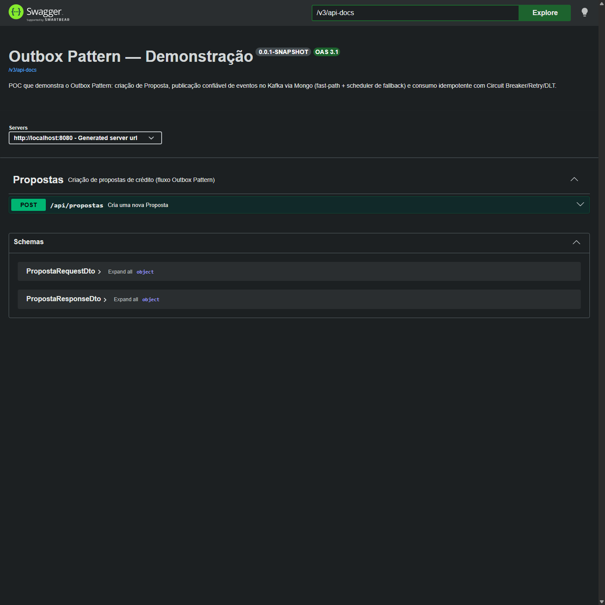
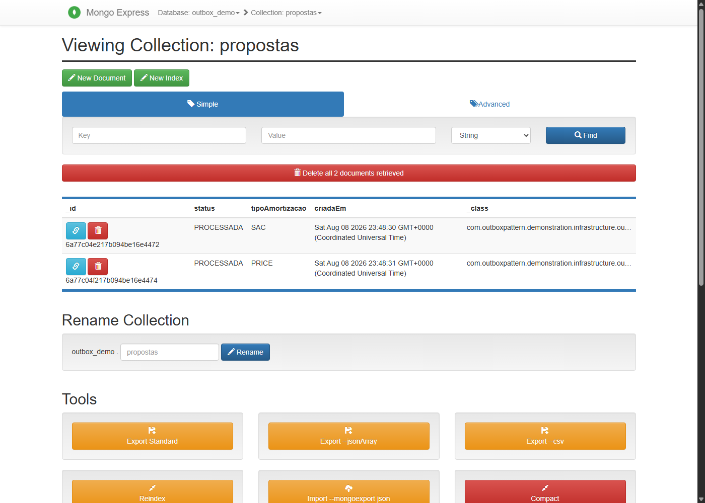
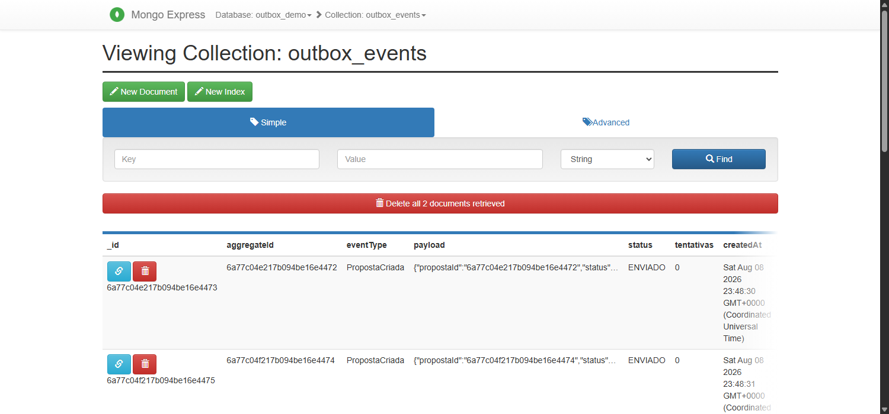
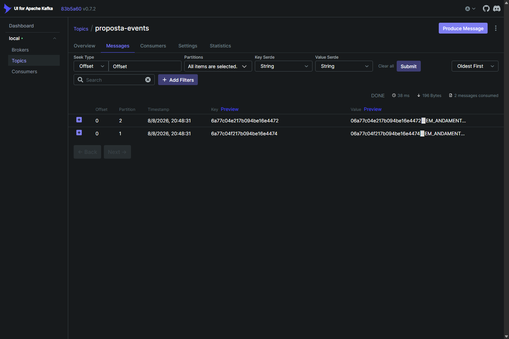
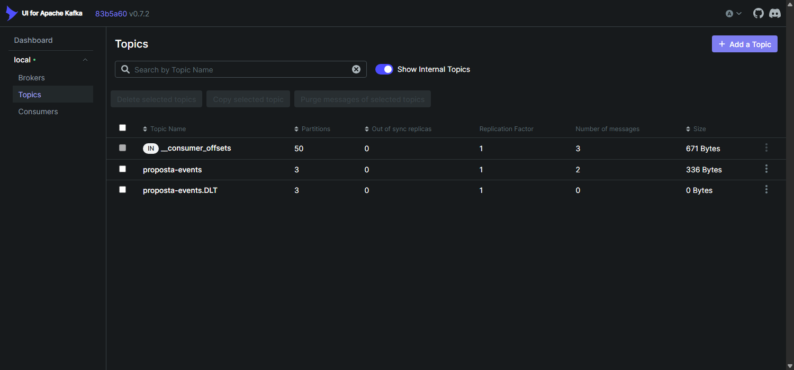

Toda vez que um sistema salva algo importante no banco de dados e precisa avisar outros sistemas sobre isso (um "evento"), existe um risco: as duas ações podem não acontecer juntas.
O dado é salvo no banco, mas o aviso nunca chega a ser enviado (o sistema caiu, a rede falhou). Outros sistemas nunca ficam sabendo — informação perdida.
O aviso é enviado, mas o dado não chega a ser salvo (a transação falhou depois). Outros sistemas reagem a algo que nunca aconteceu de verdade.
Em vez de salvar o dado e enviar o aviso como duas ações separadas, o sistema salva os dois juntos, na mesma operação — ou os dois acontecem, ou nenhum acontece. O envio de fato para os outros sistemas é feito logo depois, com garantia de que vai acontecer eventualmente, mesmo se algo falhar no meio do caminho.
O "aviso pendente" fica registrado no banco antes de qualquer tentativa de envio — se o envio falhar, ele continua lá, esperando ser tentado de novo.
O aviso só é criado se o dado de negócio também foi salvo — nunca ao contrário.
Caminho normal — leva segundos, cobre a grande maioria dos casos.
Se o envio imediato falhar (ex.: instabilidade momentânea), um processo em segundo plano tenta de novo sozinho, aumentando o tempo de espera a cada tentativa.
Se uma dependência externa está com problema persistente, o sistema para de tentar por um tempo em vez de insistir — evita piorar uma instabilidade já existente.
Casos que falharam depois de todas as tentativas ficam separados, visíveis para investigação manual — nada se perde silenciosamente.
Existe uma técnica mais sofisticada (leitura em tempo real do log do banco) que reduz o tempo de espera de segundos para milissegundos, mas exige mais peças de infraestrutura para operar. Para o objetivo desta demonstração, a verificação periódica é suficiente e mais simples de manter — a técnica mais sofisticada é a recomendação para produção em alta escala.
O sistema garante que a mensagem sempre chega — o preço disso é que, raramente, ela pode chegar duas vezes. Por isso o lado que recebe já foi construído para reconhecer e ignorar repetições com segurança, sem duplicar nenhum efeito.





| Etapa | Entrega | Status |
|---|---|---|
| MVP 0 | Orquestração completa — sobe tudo com um comando | ✔ Concluído |
| MVP 1 | Criação de Proposta pelo Swagger | ✔ Concluído |
| MVP 2 | Outbox Pattern — publicação confiável no Kafka | ✔ Concluído |
| MVP 3 | Rede de segurança automática (reprocessamento) | ✔ Concluído |
| MVP 4 | Consumo protegido, sem duplicar efeito, com fila de investigação | ✔ Concluído |
| MVP 5 | Recursos AWS (Secrets Manager) | Descartado — desnecessário para a demo |
| MVP 6 | Esta documentação | ✔ Concluído |
| MVP 7 | Pipeline automatizado com aprovação manual antes de produção | Próximo passo |
docker-compose up -d — nenhum passo manual, nenhuma configuração extra.
O sistema já demonstrou, rodando de verdade: criação de dado + evento na mesma operação,
entrega automática, recuperação automática de falha temporária, e uma fila de
investigação para o que precisar de atenção humana.
Pipeline automatizado (MVP 7) com aprovação manual obrigatória antes de qualquer mudança chegar à branch principal.